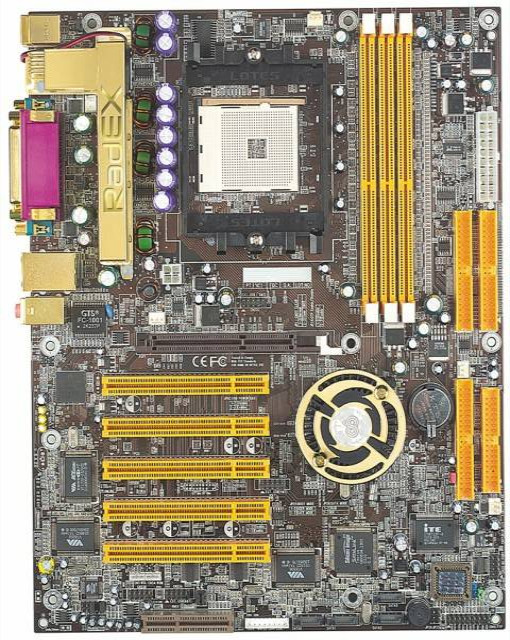

← Listeye Dön
🌐 Resmi Destek

Chaintech 7NJS Zenith
Athlon XP dönemi; nForce2 tabanlı, koleksiyonluk retro model.
Özellik
Değer
Soket
Socket A (462)
Chipset
NVIDIA nForce2
RAM
2x DDR (tek kanal)
PCIe
Yok (AGP + PCI)